syrop Pepsi®
Zero Cukru, 440 ml
Maksimum smaku, maksimum bąbelków i maksimum radości z tworzenia! Dzięki syropowi Sodastream Pepsi® Zero Cukru przygotujesz w domu napój o intensywnym smaku, który orzeźwia i pobudza do działania, wykorzystując wyłącznie dwa składniki — wodę i syrop.
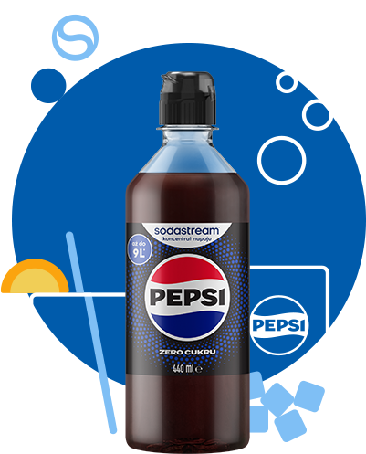
syrop Sodastream® Pepsi Zero to idealna propozycja dla...
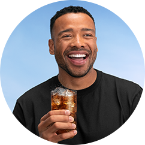
Tych, którzy mają ochotę na odrobinę słodyczy bez ograniczeń
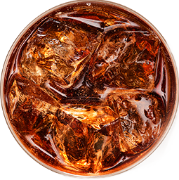
Fanów bąbelkowego orzeźwienia
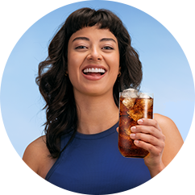
Entuzjastów eko-nawyków, otwartych na nowe
rozwiązania
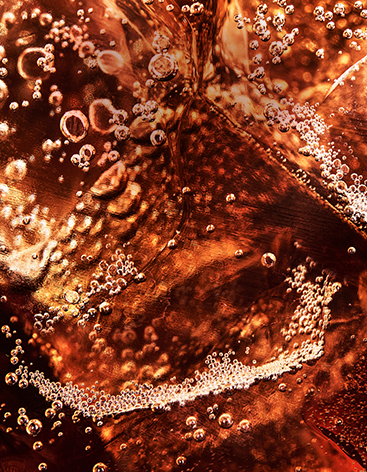
gazuj
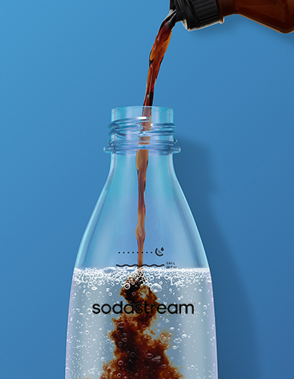
miksuj
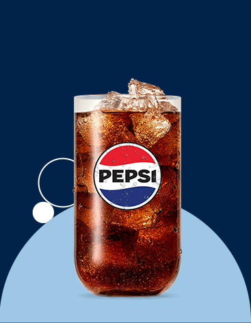
smakuj
gazuj. miksuj. smakuj.
Sięgnij po syrop Pepsi® Zero Cukru i odtwórz swój ulubiony napój bez dodatku cukru w kilka chwil. Czego będziesz potrzebować oprócz syropu? Wystarczy Ci saturator oraz zwykła woda z kranu. Dobierz poziom nagazowania i słodkości do swoich potrzeb i zdecyduj jak będzie smakować Twoja Pepsi®!
jak przygotować idealny napój?
By przygotować napój na bazie syropu Sodastream® wystarczą 3 proste kroki:
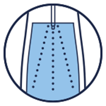
Zamień wodę w gazowaną za pomocą saturatora.
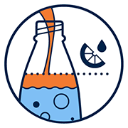
Dolej odrobinę syropu, postępując zgodnie z instrukcją na jego opakowaniu.
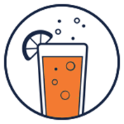
Twój napój jest
już gotowy!
*PAMIĘTAJ! Jedynie saturator Sodastream® MIX®umożliwia gazowanie soków, koktajli i wody z dodatkami. Jeśli używasz innego modelu Sodastream®, korzystaj jedynie z czystej wody, a ulubione owoce lub syrop Sodastream® dodaj później.
maximum smaku, minimum wysiłku
Czy wiesz, że z jednej, małej butelki syropu Sodastream Pepsi® Zero Cukru stworzysz
aż do dziewięciu litrów pysznego napoju? Dzięki temu ulubiony smak masz zawsze pod ręką, a
dodatkowo nie
musisz nosić
ciężkich zgrzewek ze sklepu! Jedna mała butelka to równowartość dziewięciu dużych.
Co wybierasz?
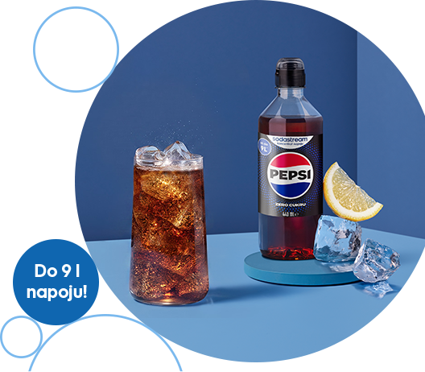
twórz własne
kompozycje smakowe
Pepsi® Zero Cukru otwiera przed Tobą wiele możliwości tworzenia wyjątkowych napojów! Dodaj plasterki limonki i świeżą miętę, połącz ją z malinami lub wzbogacaj ulubionymi owocami sezonowymi, aby za każdym razem odkrywać nowy wymiar smaku. To prosty sposób na przygotowanie efektownych mocktaili i koktajli, które zachwycą Ciebie i Twoich gości.
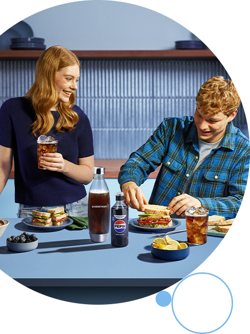
dowiedz się więcej o Sodastream®
Jak działa saturator Sodastream®?
To proste! Należy zamontować cylinder CO₂ oraz butelkę do saturatora, a następnie nagazować wodę przy pomocy przycisku lub dźwigni. Saturator Sodastream® nie wymaga podłączenia do prądu — wykorzystuje moc dwutlenku węgla.
Jaką wodę można nagazować w saturatorze Sodastream®?
Każdy saturator Sodastream® nadaje się do gazowania czystej, chłodnej wody bez dodatków. Można wykorzystać świeżą wodę prosto z kranu lub wcześniej ją przefiltrować.
Jak nagazować wodę przy użyciu saturatora Sodastream®?
Korzystając z saturatorów Sodastream® możesz samodzielnie dopasować poziom nagazowania wody do swoich
preferencji. W
zależności od modelu saturatra, naciśnij przycisk lub dźwignię i dobierz poziom bąbelków:
1–2 przyciśnięcia — woda lekko gazowana,
3–4 przyciśnięcia — woda średnio gazowana,
5–6 przyciśnięć — mocny gaz.
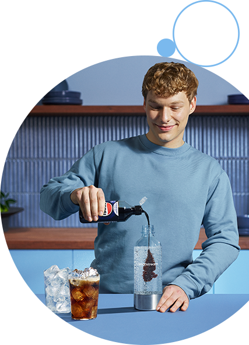
bąbelkowe orzeźwienie — takie jak lubisz!
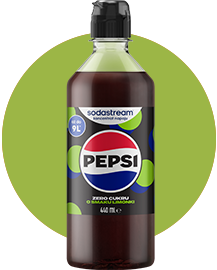
kultowe napoje gazowane
Syropy Sodastream® Pepsi®, Pepsi® Cherry, Mirinda®, 7UP® i Lipton® Ice Tea Lemon — to popularne smaki, które zachwycą fanów kultowych napojów gazowanych. Teraz możesz odtworzyć je w swoim domu i cieszyć się wyjątkowym orzeźwieniem, kiedy tylko masz ochotę.
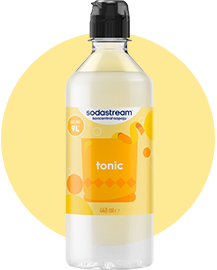
ponadczasowa klasyka
Sodastream® Cola, Tonic i Xtreme Energy to klasyczne propozycje, zapewniające intensywność i głębię smaku. Przygotujesz na ich bazie pyszne napoje gazowane idealne na co dzień jak i na wyjątkowe okazje.
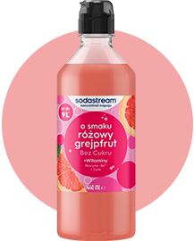
owocowe szaleństwo —
bez dodatku cukru
Masz ochotę na odrobinę owocowej przyjemności? Sięgnij po syropy SodaStream® o smakach Malinowym, Lemoniady lub Różowego Grejpfruta i twórz napoje, które zachwycają intensywnym smakiem!
#drinkbetter